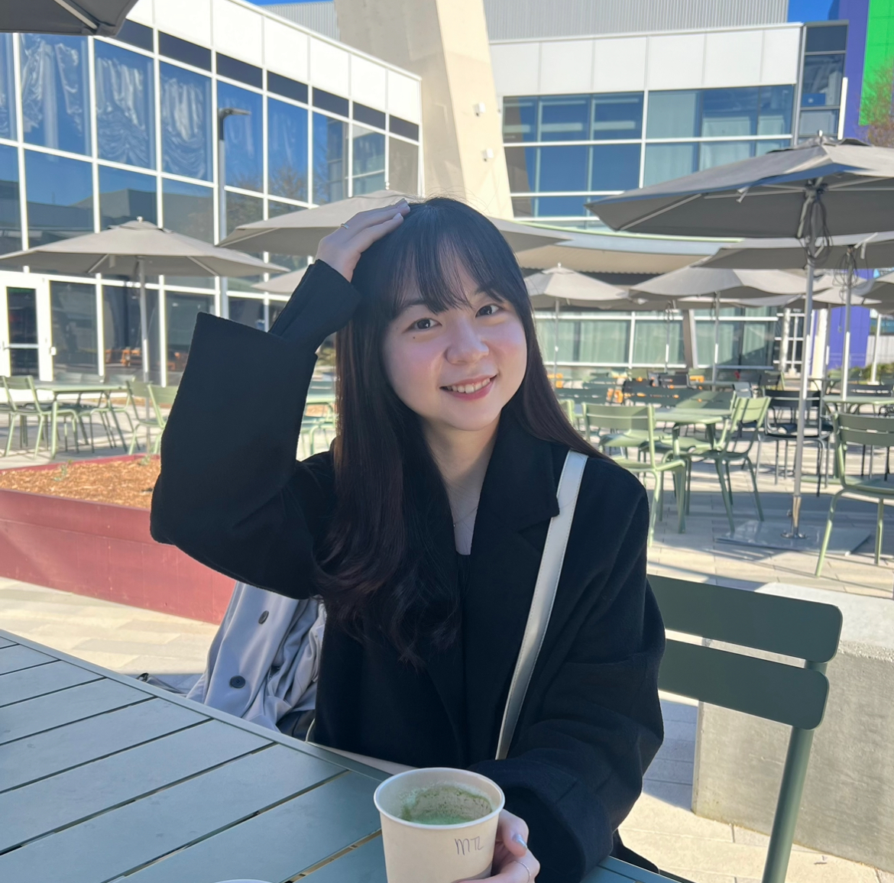

Beyond Softmax: Dual-Branch Sigmoid Architecture for Accurate Class Activation Maps
BMVC, 2025

Hi! I'm an M.S. student at KAIST AI, advised by Prof. Jong Chul Ye. I earned my B.S. in Artificial Intelligence from Ewha Womans University in February 2026 (Summa Cum Laude), where I had the privilege of being advised by Prof. Junhyug Noh throughout my undergraduate research.
My research lies at the intersection of generative modeling and robotics. I study the foundations of few-step generative models, particularly how to stabilize their training dynamics, with applications to vision-language-action (VLA) models for robotic control.
Beyond Softmax: Dual-Branch Sigmoid Architecture for Accurate Class Activation Maps
BMVC, 2025
SteeringTTA: Guiding Diffusion Trajectories for Robust Test-Time-Adaptation
ICML PUT Workshop, 2025
Slot-based Audio-visual Matching for Multi-source Sound Localization
Unpublished work
Korea Advanced Institute of Science and Technology (KAIST)
M.S. in Artificial Intelligence · GPA: 4.3/4.3
BISPL @ KAIST AI — BioImaging, Signal Processing, & Machine Learning Lab
EPITA: École pour l'informatique et les techniques avancées
Artificial Intelligence Summer Program · GPA 4.0/4.0
Ewha Womans University
B.S. in Artificial Intelligence · GPA: 4.23/4.3 · Summa Cum Laude
M.S. Student
BISPL, KAIST AI · Advisor: Jong Chul Ye
Undergraduate Researcher
Computer Vision Lab, POSTECH · Advisor: Suha Kwak
Undergraduate Researcher
Practical AI Lab, Ewha Womans University · Advisor: Junhyug Noh
Undergraduate Researcher
AI Security Lab, Ewha Womans University · Advisor: Seeun Oh
Research Intern
Industry Project
Kim Aeda Award
Ewha Womans University · Awarded to the graduating student with the best GPA in each college.
3rd Place, 2024 SPARCS Service Hackathon
Korea Advanced Institute of Science and Technology (KAIST)
1st Place, 2023 College of AI Ideas Competition
Ewha Womans University
National Scholarship for Outstanding Students in Science and Engineering
Korea Student Aid Foundation (KOSAF)
Scholarship for Academic Excellence
Ewha Womans University · Awarded three times
Song Bok Eun Scholarship
Ewha Womans University
Kim Hyun Gon Shin Kyung Soon Scholarship
Ewha Womans University
Hwain Chang Lee Scholarship
Ewha Womans University
Kathryne B. Sears Memorial Scholarship
Ewha Womans University